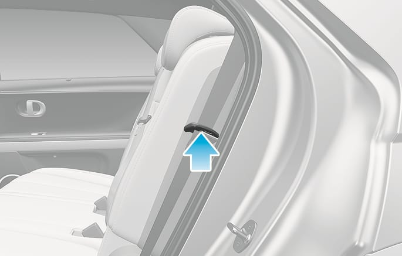
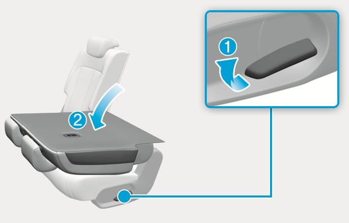
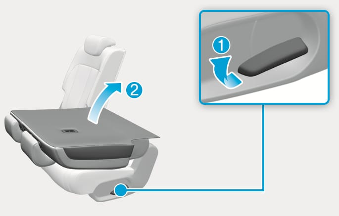
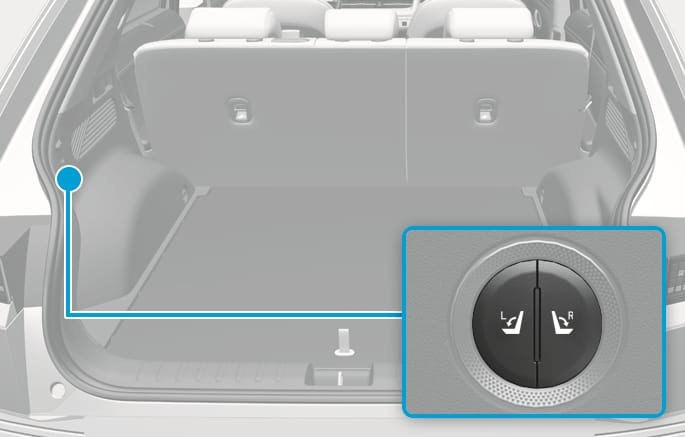

뒷좌석 접기
화물 적재 등을 위해 공간이 필요한 경우 뒷좌석 등받이를 접어 필요한 적재 공간을 확보할 수 있습니다.
-
주행 중에는 좌석을 조절하지 마십시오. 차량이 완전히 정차한 후에만 좌석을 접거나 펴십시오.
-
좌석을 접기 전에 좌석에 탑승자가 있는지 확인하십시오. 뒷좌석에 탑승자나 동물, 수화물 등이 있거나 탑승자가 하차하는 도중에는 좌석을 접지 마십시오.
-
접힌 좌석 위에 승객을 태우고 주행하지 마십시오. 급정차나 충돌 사고 발생 시 안전벨트가 정상적인 보호 기능을 제공할 수 없는 경우 심각한 부상이나 인명피해가 발생할 수 있습니다.
-
비상시 화물에 의한 부상을 방지하려면 화물의 적재 높이가 앞좌석 높이를 넘지 않도록 하십시오. 또한, 움직일 수 있는 화물은 단단히 고정해 화물이 앞쪽으로 움직이지 않도록 하십시오.
-
등받이를 펼 때에는 '딸깍'하는 소리와 함께 등받이가 고정되는 것을 확인하십시오. 급정차나 충돌 사고 발생 시 좌석이 접히는 경우 뒷좌석에 탑승한 승객이 부상을 입을 수 있습니다.
-
등받이를 편 후 앞뒤로 흔들어 고정 상태를 확인하고 안전벨트와 헤드레스트를 적절한 위치로 조절하십시오.
좌석을 접거나 펼 때 다음 사항에 주의하십시오.
-
안전벨트가 손상되지 않도록 주의하십시오.
-
손이나 발이 틈새에 끼지 않도록 주의하십시오.
-
등받이를 손으로 잡고 좌석 각도 조절 레버를 조작하십시오. 등받이를 잡지 않고 좌석 각도 조절 레버를 당기면 등받이가 갑자기 접힐 수 있습니다.
-
과도한 힘을 사용해 등받이를 강제로 조작하지 마십시오.
-
뒷좌석을 접을 때 간섭이 생기지 않도록 앞좌석 등받이를 바로 세우십시오.
-
뒷좌석 헤드레스트 잠금 해제 버튼(1)을 눌러 뒷좌석 헤드레스트를 최대한 아래로 내리십시오(2).

2C_AdjustRearHeadrestUpDown_2
-
접었을 때 양옆의 3점식 안전벨트가 적재화물과 간섭이 발생되지 않도록 양옆으로 위치 시키십시오.

2C_RearSeatFoldingStep_2
-
좌석 접이 레버(1)를 당긴 상태로 등받이를 앞으로 접으십시오(2).

2C_RearSeatFoldingStep_4
-
좌석을 펴려면, '딸각' 소리와 함께 고정될 때까지 등받이를 세우십시오.

2C_RearSeatFoldingStep_5
-
등받이를 펼 때 지나치게 세게 밀면 등받이가 2단 위치에 고정될 수 있습니다. 필요한 경우 등받이를 1단 위치로 조절한 후 좌석을 사용하십시오.
-
등받이를 세우기 전, 안전벨트를 등받이 앞에 두십시오. 안전벨트가 등받이 뒤에 있는 상태에서 등받이를 세우고 고정할 경우 안전 벨트가 손상되어 성능이 떨어질 수 있습니다.
-
등받이를 세운 후에 등받이가 확실히 고정되었는지 확인하십시오.
등받이를 조절할 때는 반드시 등받이를 손으로 잡고 안전하게 조절하십시오. 등받이를 잡지 않은 상태에서 좌석 각도 조절 레버를 당기면 등받이가 갑자기 접히게 되어 부상을 입을 수 있습니다.
테일게이트를 연 상태에서 뒷좌석 등받이를 앞으로 접을 수 있는 편의 기능입니다.
-
화물칸에 위치한 리모트 폴딩 버튼을 누르십시오.

2C_RearSeatRemoteFolding
-
등받이가 앞으로 접히면 적재공간으로 사용 할 수 있습니다.
-
등받이가 완전히 접히지 않으면 등받이를 밀어 완전히 접은 후 사용하십시오.
뒷좌석의 탑승자를 확인 후 좌석을 접으십시오. 뒷좌석에 애완동물, 수화물, 사람이 있을 경우 또는 탑승자가 내리고 있는 중에는 좌석을 접지 마십시오. 갑작스런 좌석의 움직임으로 다칠 수 있습니다.